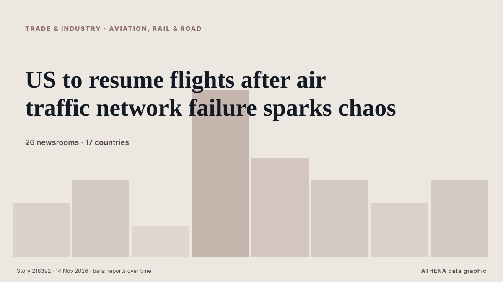

Trade, Industry & Infrastructure
SponsoredPresented by  Cybernetics and Artificial Intelligence Lab Welcome to the Cybernetics and Artificial Intelligence Laboratory, established at the Department of Business Administration of the National and Kapodistrian University of Athens. The lab is headed by Professor Dimitrios Thomakos. The lab aims to do research that can be published in top venues. Our research uses tools and methods of Artificial Intelligence, and lies in the following areas: - Forecasting - Decision making - Cyber security - Finance We are always looking forward to collaborating with exceptional students!
Cybernetics and Artificial Intelligence Lab Welcome to the Cybernetics and Artificial Intelligence Laboratory, established at the Department of Business Administration of the National and Kapodistrian University of Athens. The lab is headed by Professor Dimitrios Thomakos. The lab aims to do research that can be published in top venues. Our research uses tools and methods of Artificial Intelligence, and lies in the following areas: - Forecasting - Decision making - Cyber security - Finance We are always looking forward to collaborating with exceptional students!

Aviation, rail & roadUS to resume flights after air traffic network failure sparks chaos
The US Federal Aviation Administration lifted a nationwide ground stop on Friday after a communications failure at air traffic control centers caused chaos at airports and triggered the longest… from Tuoi Tre News
| 1 Nov | 65 |
|---|---|
| 2 Nov | 128 |
| 3 Nov | 91 |
| 4 Nov | 93 |
| 5 Nov | 105 |
| 6 Nov | 75 |
| 7 Nov | 44 |
| 8 Nov | 49 |
| 9 Nov | 118 |
| 10 Nov | 145 |
| 11 Nov | 109 |
| 12 Nov | 85 |
| 13 Nov | 56 |
| 14 Nov | 4 |
'I may lose my mind': Frustrated travellers stuck in US flight havoc
A rare nationwide ground stop left hundreds of thousands of passengers stranded across the United States, with conflicting information about delays adding to the confusion as travellers scrambled to… from CNA (Channel NewsAsia)
US flights allowed to take off again as nationwide ground stop lifted but delays expected
WASHINGTON DC, Nov 14 – Transportation Secretary Sean Duffy confirmed that the airspace has reopened. from Capital FM Kenya
Security Council Hears Competing Gulf, Iranian Narratives on Maritime Insecurity
Amid ongoing tensions in the Middle East, the Security Council today met at Bahrain’s request to discuss threats to maritime security, with Gulf States blaming Iran and its Houthi allies for attacks… from UN Meetings Coverage and Press Releases
US Briefly Grounds All Departing Flights, 2nd Such Move Since 9/11
The nationwide ground stop was the first since January 2023, when a key FAA computer system malfunctioned, and the second since the aftermath of the September 11, 2001, attacks. from NDTV
Oil tanker catches fire after hitting naval mine in Hormuz, Iran says
Coalition says it destroyed two ballistic missile launchers The Coalition has released footage it says shows the targeting and destruction of two ballistic missile launch platforms. from Gulf News
US cancels nationwide ground stop after thousands of flights delayed, canceled
The FAA said international flights will be managed on a case-by-case basis. from The Jerusalem Post
All departing US flights grounded due to communication problem
Homeland Security chief says no indication aviation ground stop triggered by threat to US. from Euractiv
Ukraine has lost 630 locomotives to Russian attacks, nearly 400 of them this year – Kalashnyk
Ukraine has lost 630 locomotives as a result of Russian attacks since the start of the full-scale invasion, with nearly 400 of those losses occurring this year. from Ukrinform (English)
DHS head Markwayne Mullin says there is not a threat to the U.S. amid FAA ground stop
Department of Homeland Security Secretary Markwayne Mullin spoke to at the White House on Friday afternoon after the FAA issues a total ground stop. from NPR
FAA expands AI advice to manage air traffic congestion across entire US airspace
Airlines praised the AI tool, but the air traffic controllers’ union wasn’t involved. from Ars Technica
Vietnam Morning Monitor: France seeks to expand helicopter, frigate building cooperation, US looks to boost chicken exports to Vietnam
Black Friday shopping starts three weeks early in Ho Chi Minh City. from Tuoi Tre News
Iraq turns to trucks to export oil in overland Syrian route revival
BASRA, Iraq: Outside a depot near Basra, hundreds of tanker trucks queue to load Iraqi crude oil bound for the Syrian port of Baniyas via an overland desert route which had been largely unused for… from Arab News
HHLA container handling falls 7.3% in January-September 2026
Hamburg, Germany (Ports Europe) November 13, 2026 – HHLA’s container throughput fell 7.3% to 4.45 million TEU in January-September 2026, as terminal automation and a strike disrupted operations in… from Ports Europe
Trump Threatens to Double Tariffs on Mexico if it Does Not Halt Migrants
WASHINGTON: President Donald Trump on Thursday threatened to double tariffs on Mexico if it does not stop more than a thousand migrants walking north toward the United States after last week’s US… from Business Recorder
Mercedes-Benz halts investment in Germany, considers shutting factories: Report
The announcement comes as the luxury German automaker faces increasing pressure from the works council and trade unions. from DW English
Evergreen Line Resumes Suez Canal Transits with Ever Eon's Maiden Voyage
Evergreen Line returns to the Suez Canal, marking a significant shift in container shipping as Ever Eon completes its first transit. from SeaNews Türkiye
Port of Los Angeles Handles Over 1 Million TEUs in October
The Port of Los Angeles handled 1,026,872 Twenty-Foot Equivalent Units (TEUs) in October, setting a record for the month and ranking as the second-highest monthly… from Maritime Professional
Two PSNI officers sacked over ‘utterly despicable’ behaviour toward vulnerable people
One incident saw officer record video of a woman with learning difficulties in bed while he made sexualised comments. from The Irish Times
Trakia Motorway deadly pile-ups No Documentation Irregularities Found in Vehicles Involved in Trakia Motorway Pile-Ups
About 50 other people were injured in the pile-ups along a section of the Trakia motorway, officials have said. from BBC News
Maran Tankers takes delivery of newbuild dual-fuel tanker Maran Myron
Maran Tankers Management, part of the Angelicoussis Group, led by Maria Angelicoussis, has announced the delivery of its newbuild tanker *Maran Myron*. from Naftemporiki (English)
ATI Secures Manila South Harbour Concession Renewal To 2063
Renewal provides long-term certainty for ATI to advance investment in port modernisation, innovation and sustainable infrastructure MANILA, PHILIPPINES – Media OutReach Newswire – 12 November 2026… from Laotian Times
Monjasa adds five sister tankers in major fleet renewal deal
Global oil and shipping group, Monjasa is adding five sister tankers to its fleet in the company’s largest-ever tonnage acquisition,. from Cyprus Shipping News
Auramarine to provide methanol fuel supply systems for hydrographic research vessels
Finland’s Auramarine has announced it has signed an agreement with Spain-based Astilleros Gondán S.A. from Bunkerspot
Marlink Secures BV Certification for XChange NextGen Platform
Marlink has secured Bureau Veritas (BV) type approval for the XChange NextGen edge platform, giving shipowners independent assurance that their onboard digital infrastructure… from Maritime Professional
United Airlines Blocks A.I. Agents From Booking Flights
The carrier said that to protect customers’ information and comply with regulations, it was barring the digital assistants from logging into accounts and managing reservations. from New York Times Business
More than one million in Lebanon face acute food insecurity, UN says
More than one million people in Lebanon face acute food insecurity, the United Nations warned on Wednesday, following years of war and economic crisis. from Naharnet
N. Korea's Kim inspects east coast naval base under construction, urges timely completion
SEOUL, Nov. 12 (Yonhap) -- North Korean leader Kim Jong-un has inspected a major... from Yonhap (English)
Ryanair changes bag drop rules for all European travellers
As of November 10th, passengers flying with Europe's biggest budget airline must check their luggage at least an hour before departure. from The Local Switzerland
Eurostar disruption after bomb alert at French train station
Passengers at St Pancras station in London were facing long queues after several services were disrupted following the threat. from Evening Standard (London)
Iran warns of domestic gas shortages from war this winter
Iranian government officials have cautioned about impending gas shortages due to damage from ongoing conflict with the United States, potentially affecting major areas including Tehran. from Arab News
Iran says 3 tankers caught fire in Hormuz
The Revolutionary Guards did not specify the names or nationality of the tankers. from Free Malaysia Today
Greek mayors and ruling party MPs rebel against new building density plans in Athens’ northern suburbs
Six mayors have appealed to Prime Minister Kyriakos Mitsotakis to withdraw proposed planning changes that could significantly increase construction in Athens’ northern suburbs, amid mounting… from ProtoThema English
Asia buys up African, Brazilian oil as shipping costs fall
Asian buyers are taking advantage of decreased shipping costs to purchase more African and Brazilian crude oil. from Arab News